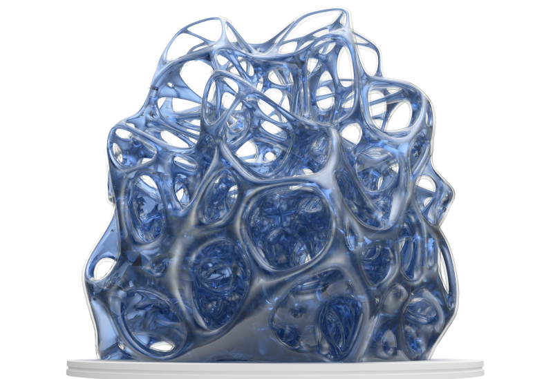
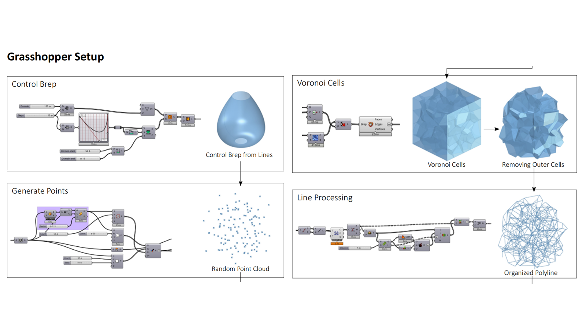
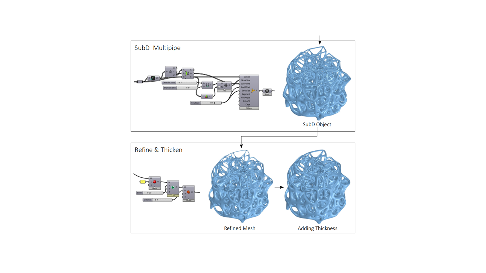
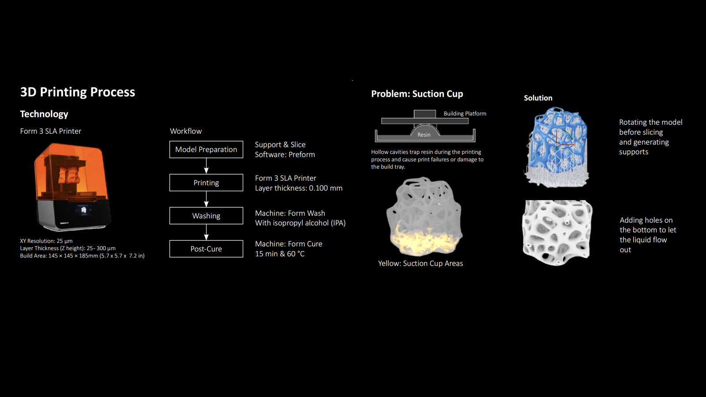
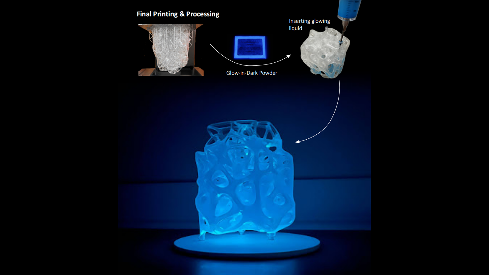
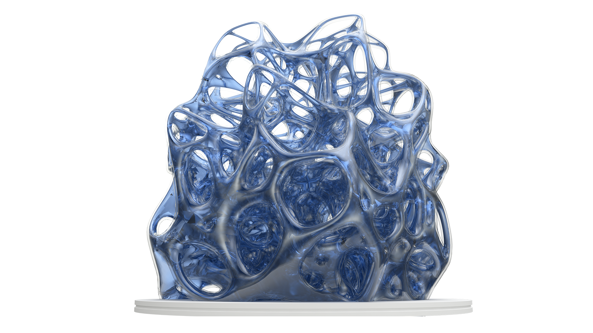

Making
Self-Glowing Lamp
Using bioluminescence as an alternative lighting source has garnered considerable interest due to its sustainability and unique aesthetic appeal. In this project, a sustainable bioluminescence lamp was conceptualized and developed using 3D printing technology via the Stereolithography (SLA) method. A Voronoi shape was used, strategically shaping the lamp’s structure to enable maximum contact with the environment. The lamp can be charged under sunlight during the day and glow in darkness during the night.




